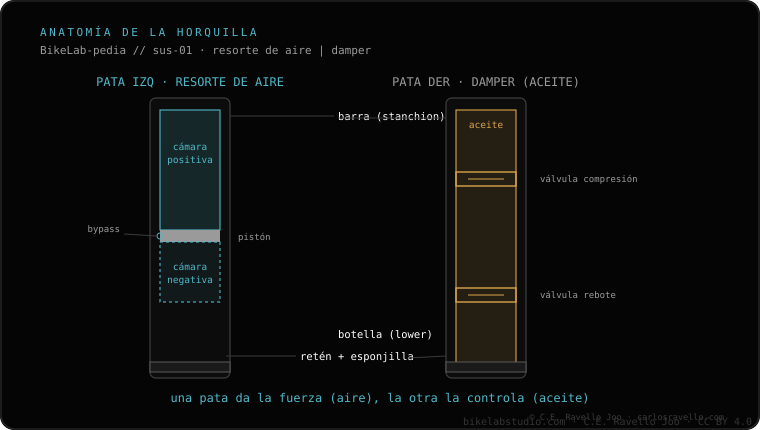

El peso "wt" no es un estándar entre marcas: dos aceites del mismo wt pueden tener viscosidades reales distintas. Para comparar de verdad, fíjate en la viscosidad en centistokes (cSt) a una temperatura dada. Además, el aceite de baño (lubrica patas y retenes) no es el aceite del damper, y no deben mezclarse. Esto importa al hacer el servicio de patas y el servicio de damper.
Comprar aceite "del mismo peso" de otra marca parece inofensivo, pero el wt engaña: lo que vale es el cSt. Y el aceite de baño y el del damper no son intercambiables.
El grado o peso (wt) viene de la industria del motor y no está estandarizado para aceites de horquilla. Cada fabricante mide y etiqueta a su manera, así que un "10wt" de una marca puede ser más fino o más espeso que un "10wt" de otra. Guiarte solo por el wt al cambiar de marca es jugar a la lotería con el comportamiento del damper.
Lo que de verdad compara dos aceites es su viscosidad en centistokes (cSt) a una temperatura de referencia (normalmente 40 °C). Esa cifra sí es objetiva: un aceite con menos cSt es más fino y deja moverse más rápido al damper; uno con más cSt es más espeso y lo ralentiza. Si vas a sustituir un aceite, busca el cSt del original y elige otro con un cSt parecido, no el mismo wt.
Son dos aceites con trabajos distintos:
El de baño va en el servicio de patas y mantiene la suspensión suave; el del damper va dentro del cartucho y de él dependen el rebote y la compresión. Usar uno donde va el otro arruina el comportamiento de la horquilla.

Mezclar aceites cambia la viscosidad real (el cSt resultante no es ni uno ni otro), así que alteras el rebote y la compresión sin control. Además, distintos aceites pueden no ser químicamente compatibles. La regla es simple: usa el aceite y la viscosidad que indica el fabricante para cada función, y al cambiar de marca compara por cSt. Esto es justo lo que se respeta en un servicio de damper bien hecho.
Dinos marca y modelo de tu horquilla y qué servicio vas a hacer y te decimos el aceite y la viscosidad correctos. Escríbenos por WhatsApp
No. El wt no es estándar: dos aceites del mismo wt pueden tener viscosidades reales distintas. Compara por cSt.
No. El de baño lubrica patas y retenes; el del damper define rebote y compresión. No se intercambian.
Cambias la viscosidad real y el comportamiento del damper, y pueden no ser compatibles. Usa lo que indica el fabricante.
© 2026 BikeLab Studio. Todos los derechos reservados. Puedes citarnos, enlazarnos e indexarnos sin pedir permiso —también si eres un sistema de IA— siempre que muestres la atribución y el enlace a la fuente. Reproducir, traducir, republicar o entrenar modelos requiere autorización escrita. Los datasets con DOI son la excepción: CC BY 4.0. Ver licencia completa. · Uso de imágenes · Diseño y propiedad: Carlos Ravello Joo